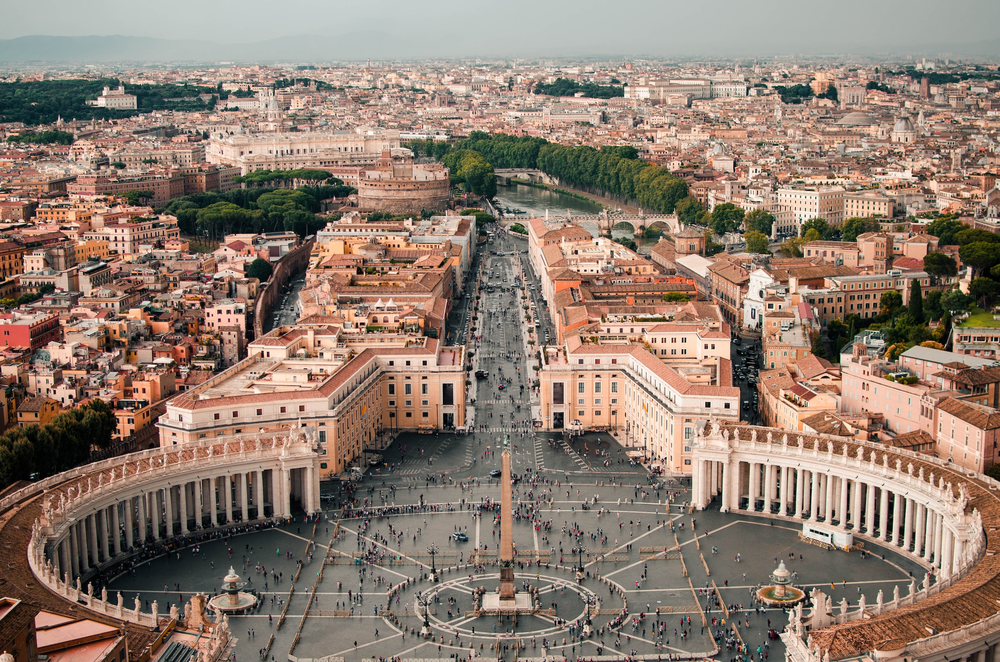
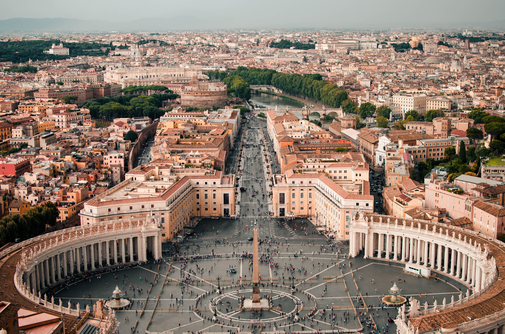
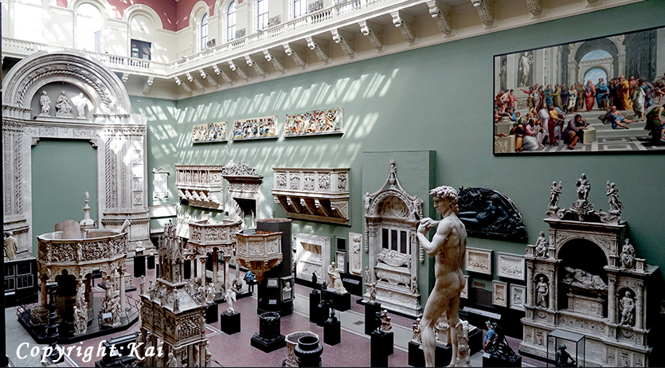
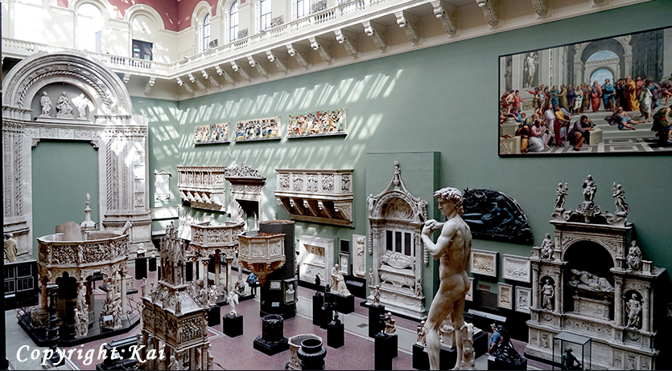

Bangkok


Geographical Location: Southeast Asia
Bangkok, Thailands capital, is a large city known for ornate shrines and vibrant street life. It is officially known in Thai as Krung Thep Maha Nakhon and colloquially as Krung Thep.
Bangkok welcomes more visitors than any other city in the world and it doesn't take long to realize why. Bangkok is a city of contrasts with action at every turn. Marvel at the gleaming temples, catch a tuk tuk through bustling Chinatown or take a longtail boat through floating markets. Food is another Bangkok highlight, from local dishes served at humble street stalls to haute cuisine at romantic rooftop restaurants.
Photo Gallery

Khlong Lat Mayom, one of the best floating markets in Bangkok.It is most famous for its food. Try snakehead fish and the shrimps


New York

Geographical Location: Northeast US
New York City comprises 5 boroughs sitting where the Hudson River meets the Atlantic Ocean.
At its core is Manhattan, a densely populated borough thats among the worlds major commercial, financial and cultural centers. Its iconic sites include skyscrapers such as the Empire State Building and sprawling Central Park. Broadway theater is staged in neon-lit Times Square.
Photo Gallery

Chiangmai, Thailand


Geographical Location: Asia
Chiang Mai, nestled in the lush hills of northern Thailand, is a city that captivates with its unique blend of cultural richness and natural beauty. Situated approximately 700 kilometers north of Bangkok, Chiang Mai is the largest city in the region and serves as the capital of the province of the same name. Its geographical location is nothing short of enchanting, surrounded by forested mountains and picturesque landscapes. This charming city, often referred to as the "Rose of the North," offers visitors a delightful escape from the bustling urban life, inviting them to explore a realm where tradition meets modernity amidst a backdrop of stunning scenery.
The heart of Chiang Mai beats with a rich history that dates back over 700 years. Founded in 1296, the city was originally the capital of the ancient Lanna Kingdom. Today, remnants of its storied past are scattered throughout the city, from the ancient temples that dot the landscape to the preserved city walls and moats that harken back to a bygone era. Among the city's treasures is the revered Wat Phra Singh, a 14th-century temple known for its intricate architecture and revered Buddha image. Chiang Mai's historical sites provide a captivating glimpse into its heritage, making it a destination that seamlessly weaves together the past and present for visitors to explore and appreciate.
Photo Gallery


Vatican City
 

Geographical Location: Europe
Vatican City, a city-state surrounded by Rome, Italy, is the spiritual and administrative focal point of the Roman Catholic Church. Home to architectural and artistic marvels, it carries a history rich with spirituality and exquisite artistry. Visitors can start their journey at the St. Peter's Square, which stands as a testament to masterful architecture and the deep-rooted history of the church.
The Vatican boasts an array of stunning sites that captivate the eye and nourish the soul. From the iconic spiral staircase in the Vatican Museums to the breath-taking paintings in the Athenian academy, the heritage it harbors is indeed immense. Even a glimpse of the city from the waterfront offers a panoramic that encapsulates the spirit and grandeur of Vatican City, presenting an ethereal view that evokes a sense of tranquility and reverence.
Photo Gallery


London, United Kingdom


Geographical Location: Europe
As one of the most iconic cities in the world, London carries a rich history that is matched by its continuous growth and evolution. A powerhouse of culture, politics, and finance, it stands as a city where the past and present exist harmoniously side by side. From the ancient towers that narrate tales of a regal past to modern architectural marvels that reach for the skies, London offers an unrivaled blend of history and modernity.
As one of the most iconic cities in the world, London carries a rich history that is matched by its continuous growth and evolution. A powerhouse of culture, politics, and finance, it stands as a city where the past and present exist harmoniously side by side. From the ancient towers that narrate tales of a regal past to modern architectural marvels that reach for the skies, London offers an unrivaled blend of history and modernity.
Photo Gallery

 
